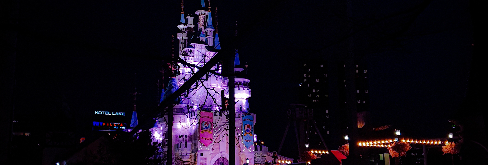

.png)
.png)
이 곡은 2016년 10월 10일에 발매한 방탄소년단의 정규 앨범, ‘WINGS’의 수록곡이다.
총 7명 중 랩 멤버가 3명이나 되기에 보통 방탄소년단의 노래들은 랩 부분이 많은데, 이 곡은 보컬 라인 4명만 불렀다.
처음 발매되었을 때부터 멜로디와 분위기가 때문에 좋아하는 곡이긴 했는데, 중학생 때는 멜로디를 위주로 들었다면 고등학생
때는 가사에 많이 집중하게 되었다.
우선 나의 고등학교 시절을 말해보자면, 1학년 때 방황을 좀 심하게 했었다. 하고 싶은 것도, 관심있는 분야도 없어서
공부를 놓았었다. 아무런 동기가 없으니까 자연스럽게 공부와 멀어질 수 밖에 없었다. 동아리도 연습량이 심하게 많은 공연
동아리로 잘못 들어가서 시간도 다 빼앗겼고, 가뜩이나 내신도 따기 힘든 자율형 사립 고등학교를 다녔기에 그 밑바닥의
성적으로는 대학을 갈 수도 없는 성적이었다.
그런데 2학기 때 코딩을 접하면서 자연스럽게 컴퓨터 관련 분야로 이루고 싶은 것들도 생기고 목표가 생길 수 있었다.
하지만 내가 그것들을 이루려면 대학의 교육이 필요하고, 대학에서만 얻을 수 있는 경험들이 필요했다. 결과적으로는 좋은
교육이 필요하면 좋은 대학이 필요하고, 좋은 대학을 가려면 성적이 필요했다. 그것을 스스로 깨달은 시점부터 고등학교를
마무리할 때까지 하루하루 최선을 다해서 살아왔다고 자신 있게 말할 수 있다.
이 시절, 내게 가장 힘들었던 부분은 성적에도 관성이 있는건지, 시험들의 결과는 내 생활들을 확 바꾼 것만큼 엄청나게
달라지지 않는 것이었다. 물론 성적이 오른 건 맞긴 하지만 노력했던 것보다 결과가 잘 나오지 않는다고 항상 느꼈다. 이
부분에서 많은 자괴감이 들었고 많이 우울했다. 아침마다 하루 계획들을 세우면서 이렇게 공부를 하는 것이 맞는지, 과연 이런
성적으로 내가 원하는 것들을 이룰 수는 있을지 미래가 너무 어두워 보였다. 그리고 마지막까지 결과들이 내 노력에 미치지
못할까 두려웠다.
이렇게 불안했던 나를 포기하지 않도록 끝까지 도와준 노래가 바로 방탄소년단의 ‘Lost’이다.

[ 내 안의 나 ]
: 정은아에 대한 20문답
Q.
언제 한국으로 왔는가?
A.
2006년 : 한국 나이로 6살 때 왔다. 너무 애매한 시기에 와서 지금 영어는 다 까먹었다.
Q.
현재 사는 곳?
A.
서울특별시 관악구
Q.
키우는 반려동물?
A.
이름 : 똘이
종: 포메라니안
생일 : 2010년 1월 12일
2013년에 입양해왔다.
Q.
최애 인형?
A.
오구! 작년 생일 때 선물 받은 것이다. 잘 때마다 껴안고 잔다.
Q.
가장 좋아하는 과자?
A.
GS 편의점 미니 프레첼. 한번에 먹기 딱 적당한 양이며 1000원 밖에 안한다.
과자를 잘 사먹진 않지만 만약 과자가 너무 땡긴다면 무조건 이것을 사먹는다. 약간의 매콤한 맛이 일품이다.
단종된다면 GS 본사 앞으로 가서 광광 울 것이다.
Q.
닮은 꼴?
A.
나는 생명체 중에서 무언가를 닮았다는 소리를 한번도 들은 적 없다.
찐빵, 만두 닮았다는 소리는 고3때 어떤 한 친구한테서 많이 듣긴 했는데,,,
좋은 거라고 생각하려고 한다.
Q.
취미?
A.
음악 듣기, 가끔씩 기타 연습, 운동, 사진 찍기 (특히 풍경 사진)
Q.
좋아하는 한국 노래 & 외국 노래 top 5
Q.
운동은 어떤 걸 하고 있는가?
A.
작년에는 스스로 하루 루틴을 정해서 홈트레이닝을 상당히 열심히 했는데,
1년동안 하니까 너무 질려서 한동안 운동 침체기가 왔었다. 그런데 운동을 쫌 쉬니까 체력이 딸리는게 느껴져서..
일단 아침마다 밖에 나가서 적어도 30분 이상은 유산소 운동을 하려고 한다.
Q.
이상형?
A.
외적 이상형 : 입술이 예쁜 사람. (두꺼운 거 X, 예쁜 거.)
내적 이상형 : 있는 그대로의 나를 사랑해줄 수 있는 사람, 믿고 의지할 수 있는 사람, 서로에게 발전이 될 수 있는 관계,
자기관리가 철저한 사람 (외적+내적 자기관리)
Q.
좋아하는 연예인?
A.
방탄소년단
중학교 2학년 때부터 좋아했는데, 이렇게까지 잘 될 줄 몰랐다.
노래, 춤, 외모 때문에 좋아하는 것도 있지만, 인간 대 인간으로서 배울 점들이 많다.
다른 연예인들과는 다르게, 영상들을 보면 사람 냄새(?)가 난다.
그래서 방탄소년단이 보내는 메세지들에 더 깊게 공감할 수 있는 것일수도..?
Q.
좋아하는 색?
A.
검정색, 파란색, 보라색을 좋아한다. 옷은 거의 맨날 검정색을 입는다.
그런데 최근에 퍼스널 컬러 진단 받았을 때 나에게 파스텔 톤 옷들이 제일 잘 어울린다고 나와서 당황스럽고 슬펐다.
Q.
여유가 된다면 한번쯤은 배워보고 싶은 것?
A.
영상 편집 기술(특히 타이포 그래피).
춤도 전문적으로 배워보고 싶다.
헬스장에서 개인 PT도 받아보고 싶다. 근데 너무 비싸 ㅇㅅㅇ
Q.
나의 가장 큰 장점과 단점?
A.
* 장점 : 성실성과 노력이라고 생각한다. 주어진 일은 책임을 다해서 끝까지 해낼 수 있다.
그리고 무언가 이루고자하는 목표가 생긴다면 그것을 위해서 최선을 다해 노력을 하는 힘을 가지고 있다.
* 단점 : 무언가를 수행할 때 속도가 너무 느리고, 멀티 태스킹이 정말 정말로 안된다..
그리고 남들이 한번에 해내는 것들은 나는 2배, 3배를 노력해야 제대로 해낼 수 있다.
그래도 이걸 거꾸로 생각해보면 한 곳에 집중하는 능력이 좋고,
그만큼 완성도 높게 일들을 처리할 수 있다는 것이라고 생각한다.
Q.
다른 사람들이 어떻게 나를 봤으면 좋겠는가?
A.
자신의 일을 즐기며, 잘은 못해도 열심히 사는 사람으로 바라봐 줬으면 좋겠다.
Q.
왜 컴퓨터공학부에 진학하게 되었는가?
A.
나는 고등학교 1학년 2학기때부터 컴퓨터 관련 분야로 진학을 하겠다고 결심했었다.
그때 학교 방과후 수업으로 파이썬을 배웠는데, 처음에는 힘들었지만 배울수록 재밌었고 계속 빠져들게 되었다.
이때 당시에는 하고 싶은 것도, 이루고 싶은 것도 없어서 약간의 방황기였는데, 컴퓨터에 대한 관심이 생기고 나서부터
앞으로의 목표를 세울 수 있었다. 이제는 내가 관심 있는 분야가 여러가지로 많은데, 이것들을 전부 아우를 수 있는
분야는 유일무이하게 컴퓨터 분야인 것 같다. 나에게 맞는 진로를 잘 선택한 것 같지만 솔직히 요즘 학부 생활이
너무 힘든 것 같긴 하다.. 허허
Q.
컴퓨터를 통해서 이루고 싶은 것들이 있는가?
A.
컴퓨터를 통해서 진출할 수 있는 분야는 수만가지이기 때문에, 사실 내가 앞으로 어떤 분야에서 분야에서
구체적으로 뭘 해야할지 모르겠다. 졸업하기 전까지도 이것을 찾지 못 할 것 같아 두렵다.
그러나 단 한가지 확실하게 마음에 담아두고 있는 목표는 많은 사람을 도울 수 있는 프로그램을 개발하는 것이다.
‘사람을 돕는다’는 것은 굉장히 여러가지 형태로 존재한다. 어떤 프로그램을 통해 실질적으로 도움을 주는 방법도
있을 것이고, 예술의 형태로도 도움을 줄 수 있다고 생각한다. 여러가지 분야에 대해 많이 찾아보고, 공부하고,
많은 것들을 경험해보아야 앞으로 내가 어떻게 살 것인지에 대해 찾을 수 있을 것 같다.
Q.
코로나가 끝나면 가장 먼저 하고 싶은 것?
A.
해외 여행이 너어어무 가고 싶다. 특히 유럽으로 여행을 너무 가고 싶다.
고등학교 3년 내내 여행은 가지 못했고, 수능 끝나고 부모님과 해외 여행 갈 생각에 드릉드릉하고 있었다.
그런데 우리 집 강아지 똘이가 심각하게 아파버리는 바람에 여행을 가지 못하게 되었고,
그 후로 바로 코로나가 터져버려서 아무데도 가지 못했다 ㅠㅠ
유럽 사진들을 보면 길거리들이 너무 예뻐서 진짜 꼭 가보고 싶다.
Q.
좌우명?
A.
인생은 가치를 찾아다니는 여정이다.
Q.
어떤 삶을 지향하는가?
A.
나는 잔잔하게 살아갔으면 좋겠다.(지루 X)
최대한 스트레스 안 받고 살았으면 좋겠는데 그럴 수는 없을 것 같고..
죽기 직전엔 그래도 꽤 괜찮은 삶을 살았다고 후회없이 떠날 수 있을 만큼, 무엇이든 최선을 다하는 삶을 살고 싶다.
[ 나의 소중한 기억 ]
: 선정한 주제에 대한 간단한 소개와 선정 이유 설명
평생 동안 나에게 있어서 제일 중요했던 시간들을 꼽으라고 하면, 고등학교 시절이라고 대답할 것이다. 그만큼 그 시절은 나에게 가장 소중한 기억으로 남아있다. 나의 정체성, 신념, 삶에 대한 가치관 등의 기초를 다지게 해준 시간이었다고도 할 수 있기 때문이다. 20문답에서 보이다시피 나는 음악을 많이 즐겨 듣는데, 노래는 나에게 많은 영향들을 미쳤다. 고등 학생 때 방황했던 시절 그리고 정신차리고 무언가를 위해 노력했던 시절 모두, 노래들을 통해서 위로를 많이 받았고 동기부여도 많이 받았다. 그 시절 들었던 노래들 중 가장 기억에 남는 곡들은 방탄소년단의 ‘Lost’이라는 곡이다. 내가 방탄소년단의 곡들을 좋아하는 이유는 그들의 가사에 담겨있는 메시지들 때문이다. 그냥 막연하게 힘내라고 얘기하는게 아니라 자신들이 직접 겪고 고뇌한 내용들을 이야기 해주는데, 이것이 나를 더욱 성숙하게 만들어주고 더욱 성장할 수 있도록 만들어준 밑받침의 역할이 되어준 것 같다. 따라서 나에게 가장 소중한 노래 한 곡을 소개해보려고 한다. 이 글들은 내가 지난 시절 어떤 생각을 하면서 살았는지, 그리고 앞으로 어떤 가치관으로 살아야 할 것인지에 대한 나를 위한 기록이라고 생각 해주길 바란다.
[ 소개합니다 ]
: 선정한 주제에 대한 구체적인 내용
Lost - 방탄소년단
눈을 감고 아직 여기 서 있어 사막과 바다 가운데 길을 잃고서 여전히 헤매고 있어 어디로 가야 할지 이리도 많은 줄 몰랐어 가지 못한 길도 갈 수 없는 길도 ... 난 너무 어려운 걸 이 길이 맞는지 정말 너무 혼란스러 Never leave me alone 그래도 믿고 있어 믿기지 않지만 길을 잃는단 건 그 길을 찾는 방법 Lost my way ... 수없이 헤매도 난 나의 길을 믿어볼래
가사 내용을 보면, 화자(방탄소년단)는 어디로 가야할지 길을 잃은 상황이다. 또한 앞으로 가고 있는 현재 이 길이
옳은 길인지 확신하지 못하고 불안해하고 있다. 하지만 역 발상으로, 길을 잃는다는 것은 옳은 길을 찾는 방법이라고 말해주고
있다.
이 가사들을 통해, 내가 이런 식으로 노력을 하고, 공부를 하고, 살아내는 것이 틀리지 않았음을 믿기로 결정했다.
그리고 당장 눈에 띄는 결과가 나오지 않더라도 그동안 쏟아왔던 내 노력들은 헛되지 않았다고 생각하게 되었고, 더 노력하게
되었다.
어디로 가는 개미를 본 적 있어 단 한번에 길을 찾는 법이 없어 수없이 부딪히며 기어가는 먹일 찾기 위해 며칠이고 방황하는 You know 쓸고 있어 이 좌절도 난 믿어 우린 바로 가고 있어 언젠가 우리가 찾게 되면 분명 한 번에 집으로 와 개미처럼
위의 가사는 이 곡 중에 나온 개미 이론이다. 개미는 먹이를 찾기 위해 수많은 길들을 떠나고, 먹이를 찾았으면 그것을
들고 다시 집으로 돌아와야 한다. 집으로 다시 돌아가는 과정에서 개미는 수많은 장애물들에 수없이 부딪히며 방황을 하는데,
어느 순간 최단 경로를 찾으면 그때부터 모두 집으로 바로 갈 수 있는 경로로 움직인다는 이론이다.
화자는 우리가 옳은 길을 찾아서 방황을 하는 이 시간들이 값지다는 것을 얘기해주고 있다. 그리고 그 좌절들을 통해서
길을 찾아낸다면 집으로 한번에 찾아오는 개미들처럼 더 발전할 수 있다고 하고 있다.
나는 이 개미 이론을 통해 고등학생 나에게 주어진 지금의 시련은 더 나은 미래를 위한 밑거름이 될 것이라고 생각하게
되었다. 더 나은 미래라는 것이 꼭 대학이거나 성적과 같은 물질적인 것들이 아니더라도, 내가 삶을 살아가는데 필요한 건강한
가치관과 뿌리깊은 신념이라고 느꼈다.
이 곡은 가장 힘겨웠던 고등학교 시절을 가장 소중했던 시간들로 만들어 줄 수 있었다. 아직도 이 곡을 듣고 있으면
그때 당시의 감정들이 생각나서 기분이 굉장히 몰랑몰랑해진다. 나에게 시련을 이겨낼 수 있는 방법을 알려준 방탄소년단에게
감사하다. 이 그룹을 알지 못했다면 나는 지금 어떤 삶을 살고 있을까? 방탄소년단의 노래들 중, 사람들에게 울림을 주는 노래들은
지금까지도 많지만 앞으로도 많이 만들 수 있었으면 좋겠다.